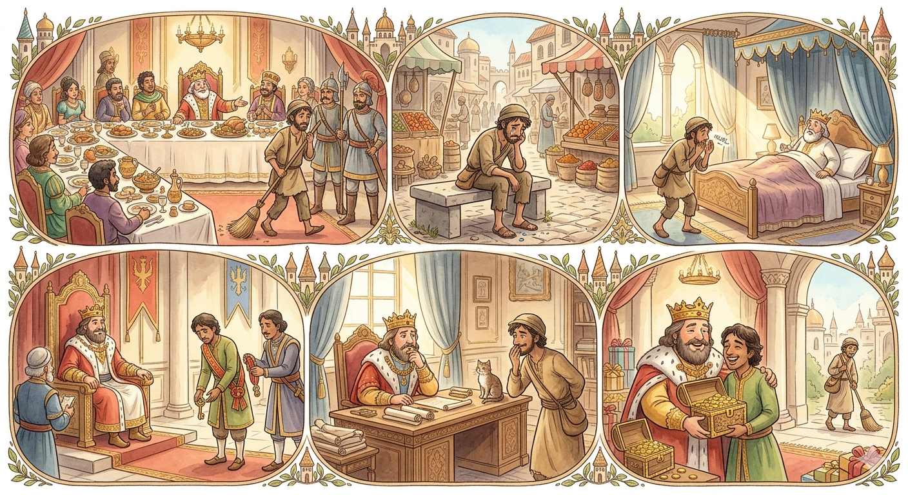

The Fall and Rise of a Merchant

Dantila, a prosperous and trusted merchant, served as a key administrator in the city of Vardhamana. At his daughter's lavish wedding, he spotted a lowly royal sweeper sitting in a seat reserved for nobles. Enraged by this breach of protocol, Dantila had the servant forcefully thrown out. Humiliated, the sweeper plotted revenge. Knowing he couldn't attack Dantila openly due to his low status, he devised a clever plan. The next morning, while sweeping near the sleeping king, the servant mumbled aloud, "Dantila is so arrogant, he even dares to embrace the queen!". When questioned by the king, the servant pretended to be half-asleep from a night of gambling and claimed he didn't know what he was saying. However, the seed of doubt was planted, and the king revoked Dantila's royal privileges and access to the castle.
Dantila eventually discovered that the sweeper was behind his downfall. Realizing he needed to make peace, the merchant approached the sweeper, apologized, and offered him gifts in exchange for his help. To restore the merchant's reputation, the sweeper agreed to reverse the rumor. One morning, while sweeping, the servant loudly mumbled, "What nonsense! The king dares to kiss my sweeper's broom!". Startled, the king angrily confronted the servant, demanding to know if the sweeper was accusing the king of such a degrading act. The servant replied that he had been talking nonsense, just as he had been when he mumbled about Dantila and the queen.
The king realized the absurdity of the claims. He deduced that if the rumor about the king was blatantly false, the previous rumor about the merchant must have been false as well. Feeling guilty for punishing his loyal administrator without proof, the king reinstated Dantila to his former position and bestowed him with lavish gifts.